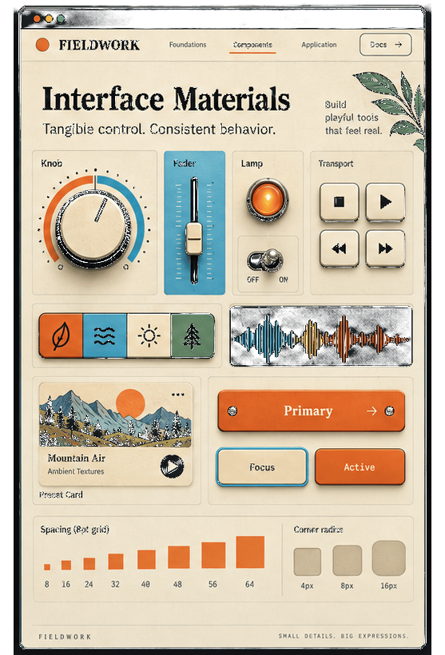

Screenshot → design tokens → portable export.
A full-stack extractor that reads UI from an image and returns W3C Design Tokens plus CSS, React, and Tailwind — owned end-to-end from extractors through verification.
What this proves
Ownership you can verify on disk
Not a slide deck. A shipped spine with docs, tests, and honest scope boundaries.
-
Extract → graph → export
Colors, spacing, typography, and shadows (plus shape/opacity) flow into a token graph and out as W3C JSON, CSS, React theme, and Tailwind config.
-
W3C DTCG as interchange
Compat+ export covers the official
$typeset with documented deltas — not a one-off proprietary dump. -
Full-stack + gates
FastAPI + React/TS, typed contracts, and local gates (
make check, Vitest, Playwright MVP smoke) behind GitHub Actions CI.
Agentic engineering
Written decisions → plans → build → re-verify
AI-fluent work as a method, not a brand. Agents draft; the human owns the gate.
-
Decide in writing
Roadmap and architecture SoT in-repo before growing surface area.
-
Plan the cut
Specs and plans with explicit parked scope — mood board and friends stay off the happy path.
-
Implement against contracts
Extractors, token graph, exporters, and UI tabs aligned to the same product spine.
-
Re-verify from disk
Independent checks: types, unit/smoke tests, Playwright MVP pack — not vibes.
No agent role names, vendor logos, or “AI built this.” Claude + CV/OCR are tools inside a human-owned system.
Proof gallery
Tooling evidence, not launch hype
Artifacts you can open in the repo or reproduce locally.
{
"color": {
"signal-orange": {
"$type": "color",
"$value": "#F47A24"
},
"panel-blue": {
"$type": "color",
"$value": "#4BA4C7"
}
}
}Shape of a real /design-tokens/export/w3c payload (Fieldwork palette excerpt).
:root {
--color-signal-orange: #F47A24;
--color-panel-blue: #4BA4C7;
--color-warm-cream: #F3DFB4;
--color-field-green: #364F39;
--color-studio-black: #15171C;
}CSS custom properties from the same token graph — downloadable beside React and Tailwind.
Open the latest Actions run on GitHub — do not trust a static green badge here.
Upload → family extractors → token graph → W3C / CSS / React / Tailwind.
Open the Engineering diagram CURRENT_ARCHITECTURE_STATE.mdBoundaries and parked features documented in-repo, not implied by this site.
Visual overview
From messy inputs to a token language
Compressed product story. Where visuals are illustrative, they are labeled.
Real inputs — not clean mockups
Hand-painted synth panels used as extraction inputs.


What a complete guide can look like
Fieldwork sheets show foundations, interface materials, and application — narrative depth beyond five swatches.



What a token system unlocks
Interfaces styled from the same Fieldwork language — why portable tokens matter once you have them.


Boundary
Ships today vs parked
Aligned with the README and MVP roadmap — park ≠ delete.
Ships
- Colors, spacing, typography, shadows
- Shape (border/radius) + opacity
- W3C JSON, CSS, React theme, Tailwind theme
- Overview narrative + Export tab
Parked / not the default path
- Mood board, lighting, geometry
- Sessions, batch jobs, multimodal inputs
- Flutter / Figma as product surfaces
- Default-on GPU / deep-model pipelines
About
Builder
Josh Band — building Copy That as an open-source design-token extractor with a disciplined extract→export spine, W3C-oriented interchange, and verification you can run yourself.
- github.com/joshband/copy-that
- Engineering case study
- LinkedIn — placeholder
- Email — placeholder